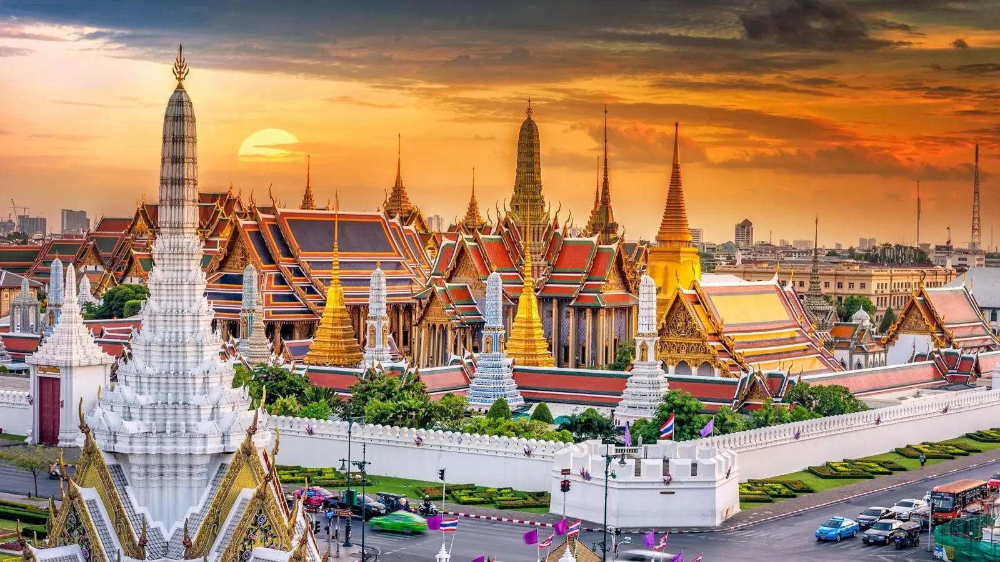

🇮🇹 Рим, Флоренция, Венеция
Италия — это страна-музей. Гуляйте по древним улочкам, пробуйте настоящую пасту карбонару и смотрите закат на площади Микеланджело. Искусство, мода и вкусная еда ждут вас.

Италия — это страна-музей. Гуляйте по древним улочкам, пробуйте настоящую пасту карбонару и смотрите закат на площади Микеланджело. Искусство, мода и вкусная еда ждут вас.

Смесь ультрасовременных небоскрёбов и вековых традиций. Посетите квартал Гиндза, увидьте гору Фудзи и попробуйте настоящий рамен.

Исландия — земля льда и огня. Увидьте северное сияние, искупайтесь в Голубой лагуне и прогуляйтесь по национальным паркам с вулканами.

Тропический рай для любителей экзотики. Белоснежный песок, вкуснейшие фрукты, ночные рынки и буддийские храмы.